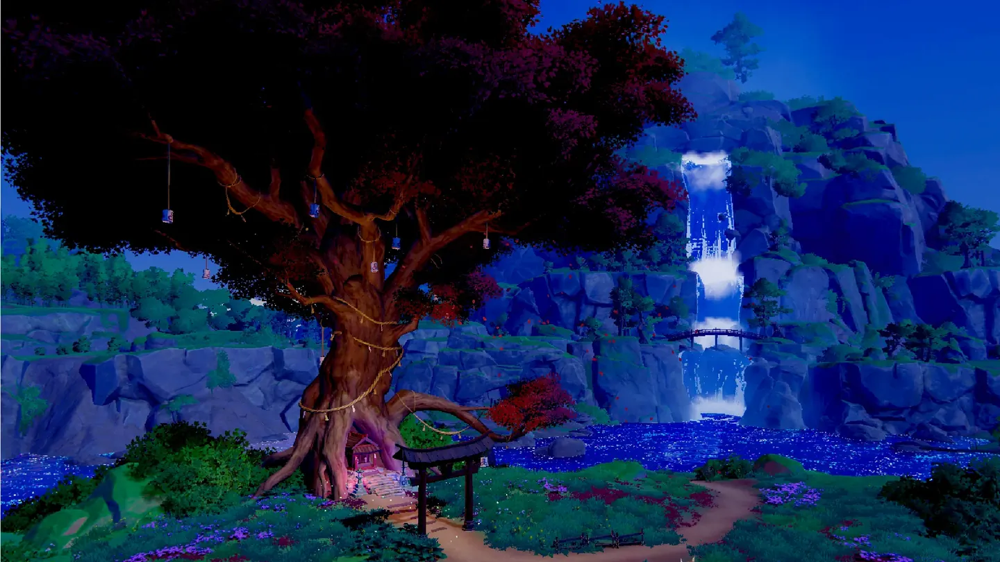
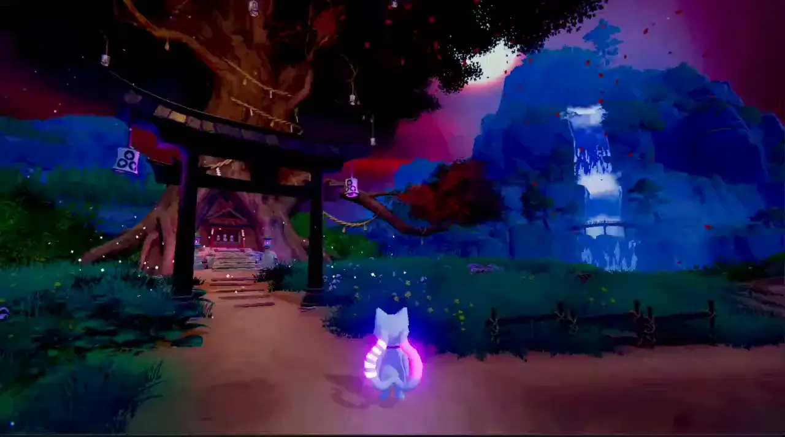
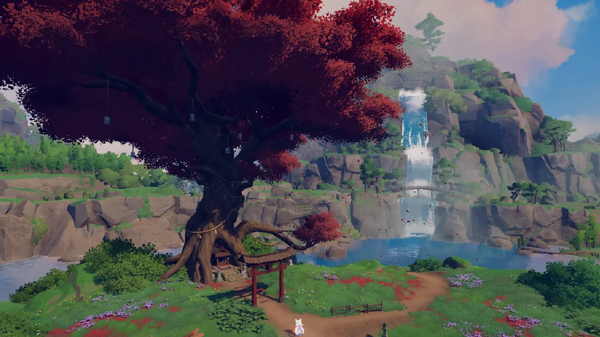
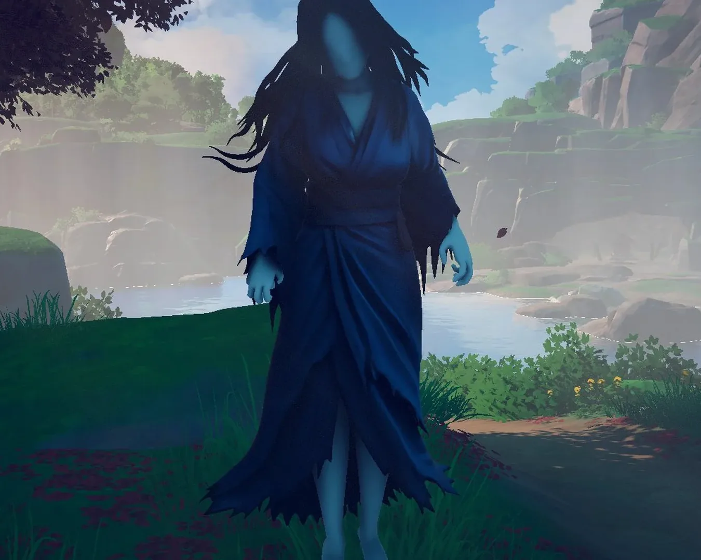
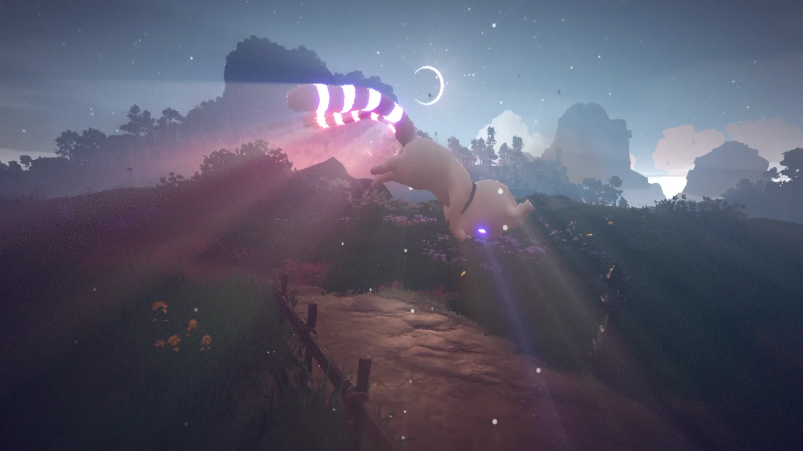
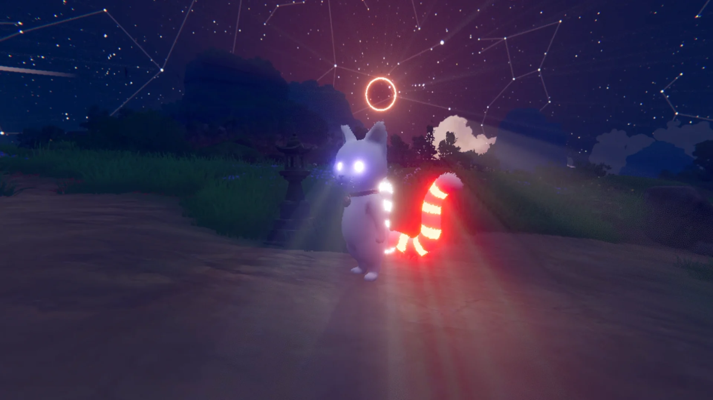
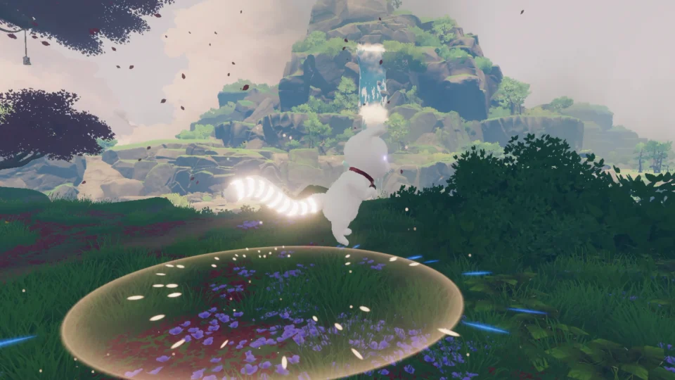
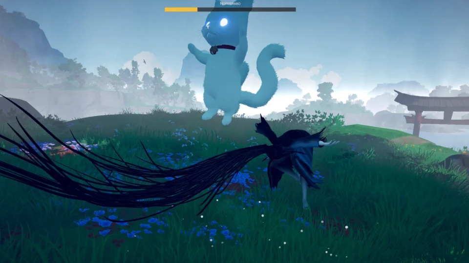
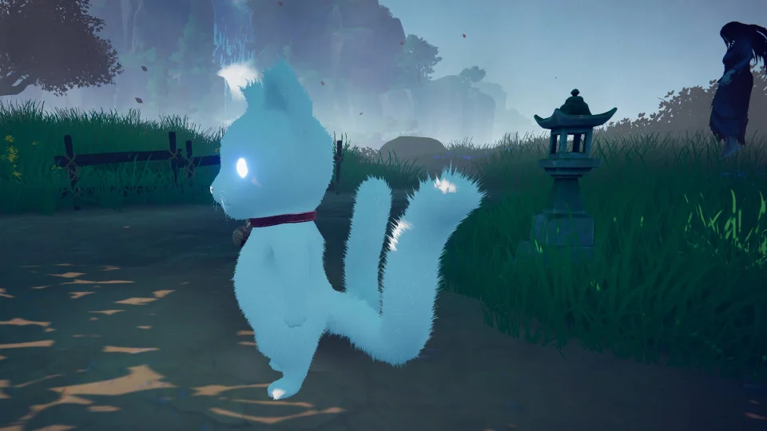
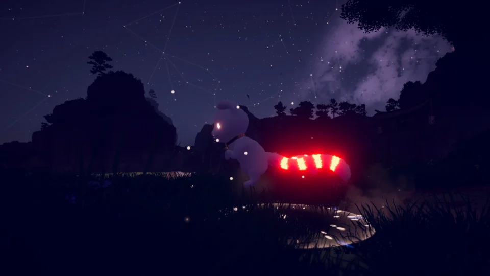

Left tail
Fight them
Break what holds them by force. Every fight leaves a ring on the left tail, and the world grows darker: night comes early, the fog thickens, the spirits keep their distance.

In development · PC
Every monster was someone once.
Fight them, and the world goes dark. Free them, and it heals.
Follow the developmentPurgatory is not a punishment here. It is a waiting room.
Ten souls are stuck in it, each held by the one thing they could not let go of: a rage, an oath, a hunger, a war long over. The longer they held on, the less of them was left, until only a yokai remained.
You are Yoru, a two-tailed Nekomata who wakes beside an ancient tree with no memory of who she was. Every soul you set free gives a piece of it back.
Both paths free the soul. Only one lets you meet the person, and the world remembers which one you took.

Left tail
Break what holds them by force. Every fight leaves a ring on the left tail, and the world grows darker: night comes early, the fog thickens, the spirits keep their distance.

Right tail
Reach the person inside the yokai and help them let go. Every soul you free leaves a ring on the right tail, and the light comes back. You can finish the whole game without a single fight.
Fight them and you meet the monster. Free them and you meet the person.

Oni鬼
A general who saved his village, then could not stop fighting.
Noppera-bōのっぺらぼう
A woman nobody looked at for so long that her face faded away.
Kodama木霊
Tree spirits whose forest was cut down before its time. Grief makes them strike at anything that moves.
All drawn from Japanese folklore. Every spirit you meet has a name and a story of its own.
No morality meter
Every judgment stays on Yoru's tails and changes the world itself: the hour, the weather, the fog, the light, and the way the spirits look at her.

The eclipse
Seven endings. One of them waits in the eclipse.

Work in progress




Steam page, demo and launch news go out on X first.